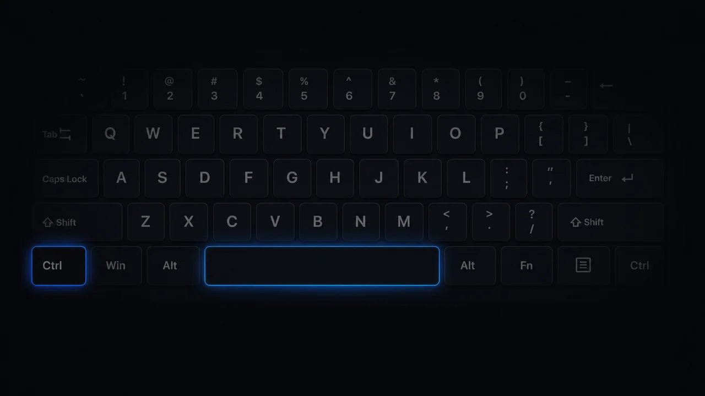
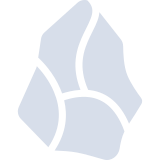
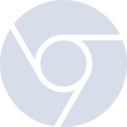
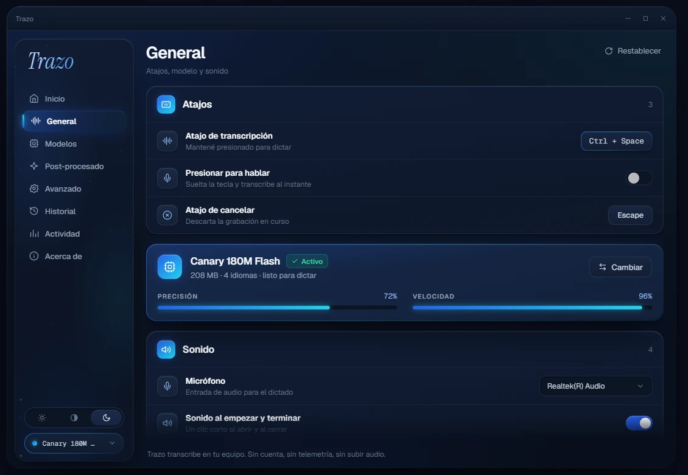
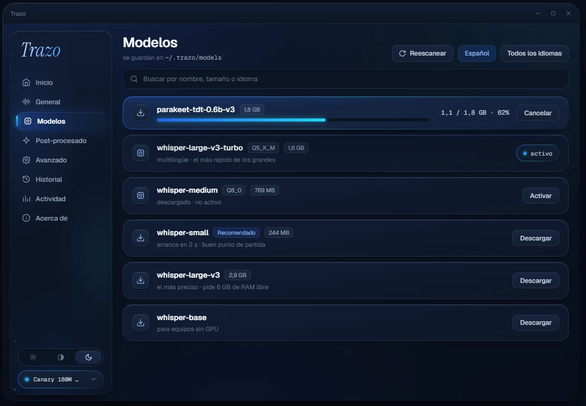
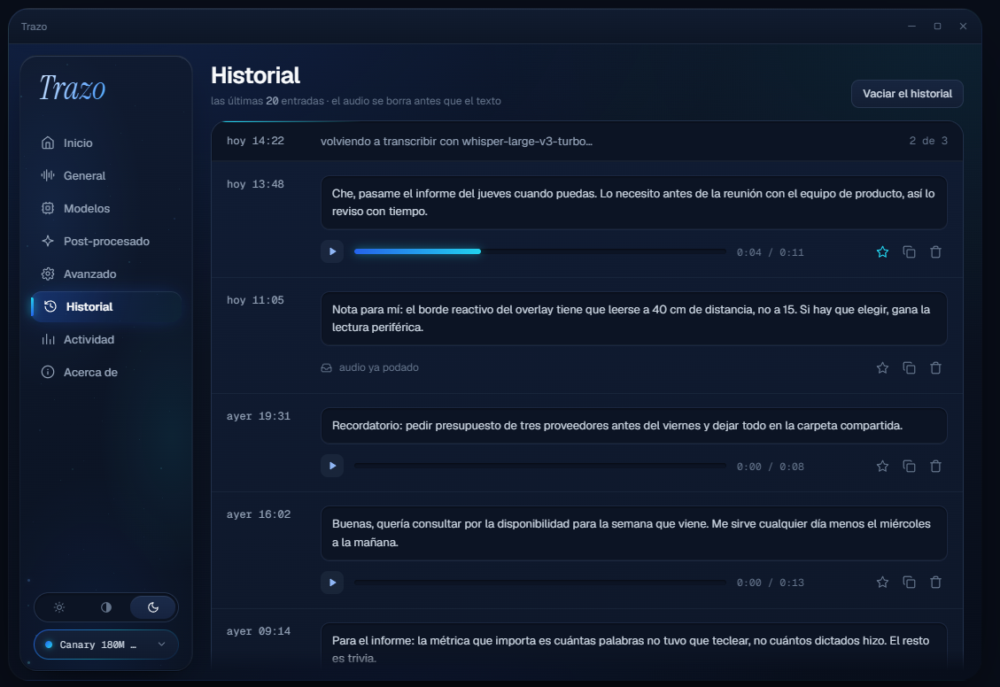
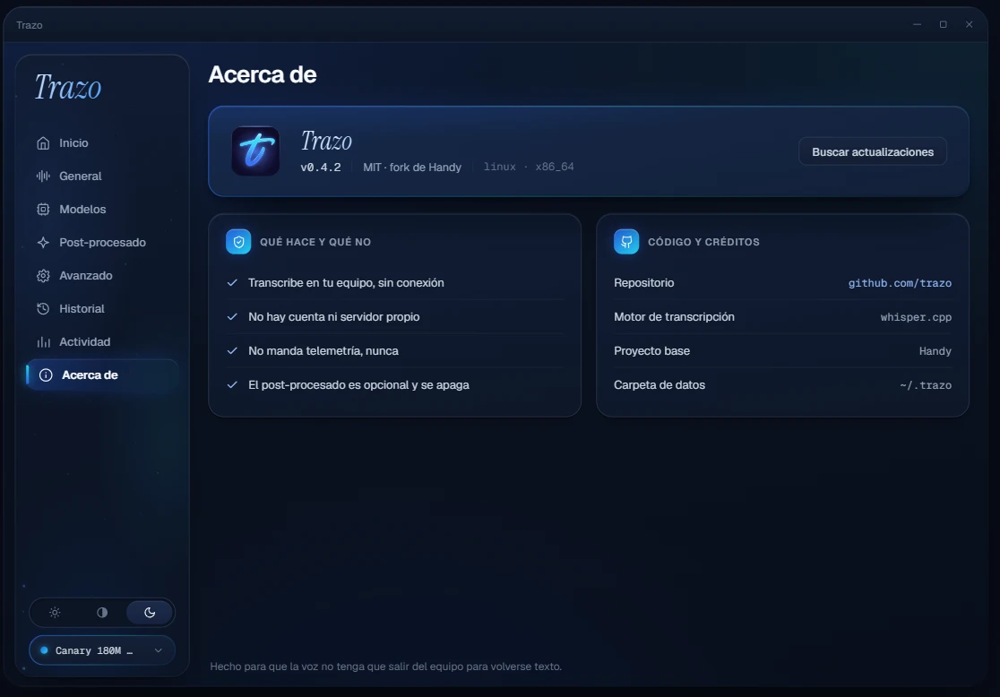
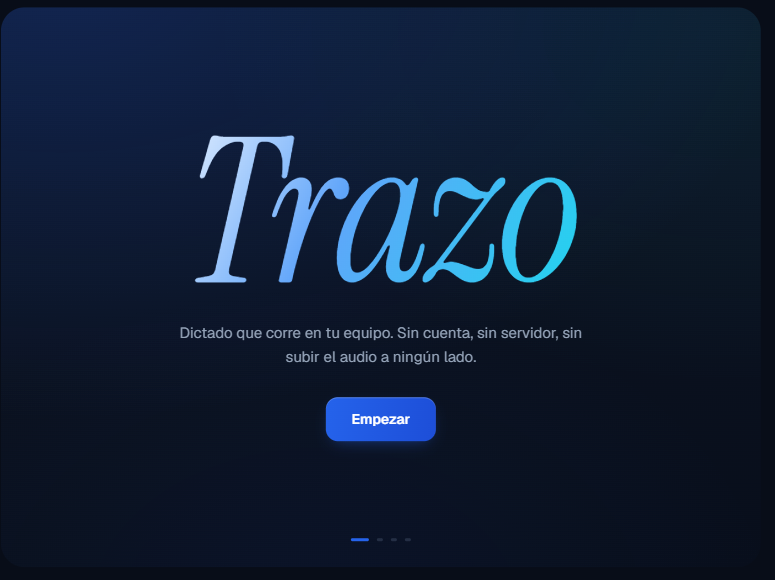

casual
commit
community
Perfiles en español
Casual, commit o community: cada uno con su tono y su glosario técnico.
Dictado por voz con IA · 100% local
Dictado por voz con IA, gratis y en español. Tu voz nunca sale de tu computador.
Sin cuenta. Sin suscripción. Código abierto.
Ctrl + Space para dictar. O di «Hey Trazo» y ni eso.
La escucha también corre en tu equipo. No hay grabación continua ni nada que se suba: el detector solo busca esas dos palabras y descarta todo lo demás.


Tú hablas natural. Trazo entrega lo que enviarías.
oye eh… escríbele a la Cami que llego a las dos… no, mejor a las tres, y que lleve, o sea, los contratos
Cami, llego a las 15:00. Por favor, lleva los contratos.
Quita las muletillas, entiende el «no, mejor…» y deja solo la versión final.
WhatsApp, Gmail, Slack, Notion, VS Code, Cursor, ChatGPT. En cualquier campo de texto de tu computador.






Tecleas unas 45 palabras por minuto. Hablas cerca de 200. La cuenta la haces tú.
Trazo se adapta a cómo escribes, no al revés.
Casual, commit o community: cada uno con su tono y su glosario técnico.
Aprende tus nombres, marcas y siglas.
Vuelve a pegar lo de hace cinco minutos o lo de ayer.
100+
es ⇄ en · detección automática
Detecta el idioma solo, cambia del español al inglés sin tocar nada.
Privacidad de verdad
Trazo transcribe 100% local, en tu máquina. Sin cuenta, sin suscripción y con código abierto bajo licencia MIT.
Otros cobran USD 12 al mes y suben tu voz a la nube. Trazo no.
Procesamiento local: el audio se queda en tu equipo.
Sin registro: lo abres y funciona.
Código abierto: puedes leer qué hace.
En un minuto: pulsas el atajo, hablas, y tu texto aparece donde estés escribiendo.

Sin humo: así se ve la app que vas a instalar.





Cada afirmación de esta página se puede verificar. Estos son los enlaces.
El código es público
Todo el repositorio, bajo licencia MIT. Puedes leer exactamente qué hace con tu audio.
Ver el repositorioLa app existe y se descarga
Versión 0.9.2 publicada, con binarios para Windows, macOS y Linux.
Ver el releaseTranscribe en tu máquina
El modelo corre local, sobre ggml. No hay ninguna llamada a un servidor: está en el código.
Ver el código que transcribeEstá construido sobre Handy
Trazo es un fork del proyecto de cjpais. No lo escondemos: lo acreditamos.
Ver el proyecto originalDescárgalo, habla y mira cómo aparece tu texto. Sin cuenta.
Windows y macOS te van a mostrar un aviso al abrirlo. Es normal.
Trazo todavía no está firmado digitalmente — la firma cuesta cientos de dólares al año y este proyecto es gratuito. El aviso no dice que la app sea peligrosa: dice que el sistema no conoce a quien la publicó. Puedes leer el código entero antes de instalarla.
Gratis y de código abierto. Para siempre.
Con la pregunta ya escrita. Un clic.